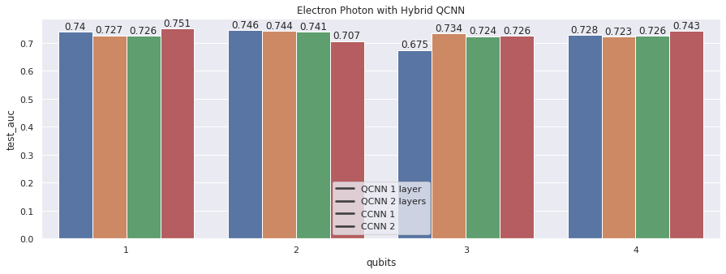
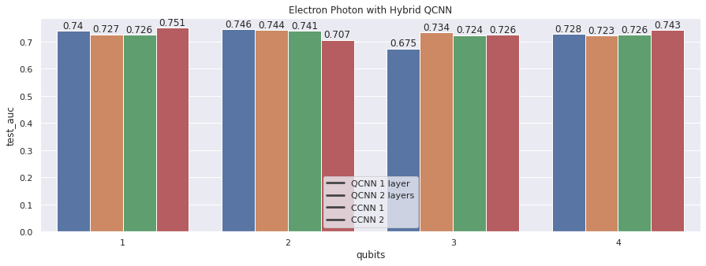
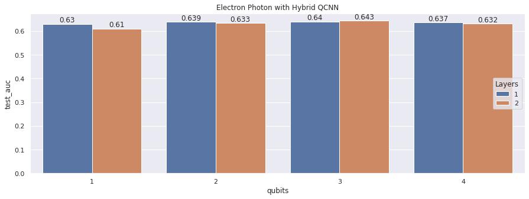

Lightning talk of the night
revealOptions: transition: ‘fade’ transitionSpeed: ‘fast’ width: 1400 —
Quantum Convolutional Neural Networks for High Energy Physics Analysis at the LHC

Datasets

- 32 $\times$ 32 image size.
- Total of 498k images
- Preprocessing likes center crop (8,8), PCA, standard and logarithmic scaling.
The image shows the energy and time channels for electrons (top) and photons (bottom). For training only energy channel is used.
Preprocessing map

- 125 $\times$ 125 image size.
- Total of 700k images
- Preprocessing likes center crop (40,40), PCA, standard and logarithmic scaling.

The image shows the ECAL, HCAL and time channels for Quarks (top) and Gluons (bottom). For training only ECAL channel is used.
Hybrid QCNN Architectures

──H──RZ(M0)──RY(M1)──RZ(M2)──RZ(M3)──RY(M4)──RZ(M5)──RZ(M6)──RY(M7)──RZ(M8)─┤<Z>
Illustrations have a kernel size of (3,3). Circuits are followed by classical fully connected layers.
Results on Electron Photon
90k train, 20k test samples, Arch1 (left), Arch2 (right)</b>
 

Best Test AUC:
- QCNN: 0.756
- CCNN: 0.76
Results on Quark Gluon
90k train, 20k test samples, Arch1 </b>

Best Test AUC:
- QCNN: 0.64
Models tend ot Overfit.
Trained on Full dataset
\(Arch2) EP | 1 qubit | 2 layers | Train AUC: 0.77 | Test AUC: 0.7684


\(Arch2) QG | 1 qubit | 1 layer | Train AUC: 0.723 | Test AUC: 0.699


Discussion
- Quantum models perform at par with classical models with same number of parameters.
- Increasing the qubits or layers does not necessarily increases the AUC. Had to tune these hyperparameters.
Future work
- Classical vision transformers seems promising. Implementing the quantum version might give some advantage.
- Using gradient free optimization techniques to train quantum neural network.
References
- Cong, I., Choi, S. & Lukin, M.D. Quantum convolutional neural networks. Nat. Phys. 15, 1273–1278 (2019). https://doi.org/10.1038/s41567-019-0648-8
- S.~Y.~C.~Chen, T.~C.~Wei, C.~Zhang, H.~Yu and S.~Yoo, ``Quantum convolutional neural networks for high energy physics data analysis,’’ Phys. Rev. Res. \textbf{4} (2022) no.1, 013231 doi:10.1103/PhysRevResearch.4.013231
- Liu, J., Lim, K.H., Wood, K.L. et al. Hybrid quantum-classical convolutional neural networks. Sci. China Phys. Mech. Astron. 64, 290311 (2021). https://doi.org/10.1007/s11433-021-1734-3
- Tüysüz, C., Rieger, C., Novotny, K. et al. Hybrid quantum classical graph neural networks for particle track reconstruction. Quantum Mach. Intell. 3, 29 (2021). https://doi.org/10.1007/s42484-021-00055-9
- Pérez-Salinas, A., Cervera-Lierta, A., Gil-Fuster, E., & Latorre, J. (2020). Data re-uploading for a universal quantum classifier. Quantum, 4, 226.
- Chen, Yusui & Hu, Wenhao & Li, Xiang. (2021). Feasible Architecture for Quantum Fully Convolutional Networks.
- Chen, Yixiong. (2021). QDCNN: Quantum Dilated Convolutional Neural Network.